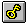

Use this option to view the key with which the active document was encrypted or decrypted. If no key is available for the active document (and if the icon is grayed out), this menu option will not be offered. If there is a key available, it is located in the internal key store.
The key will be displayed in the dialog Key Display, assuming it is a one-line key, as is the case in all the encryption algorithms in CrypTool, with the exception of the Hill encryption algorithm.
If you click the button Copy Key in the dialog Key Display the actually shown / used key is stored into the internal key storage.
Shortcuts
| Toolbar: |  |